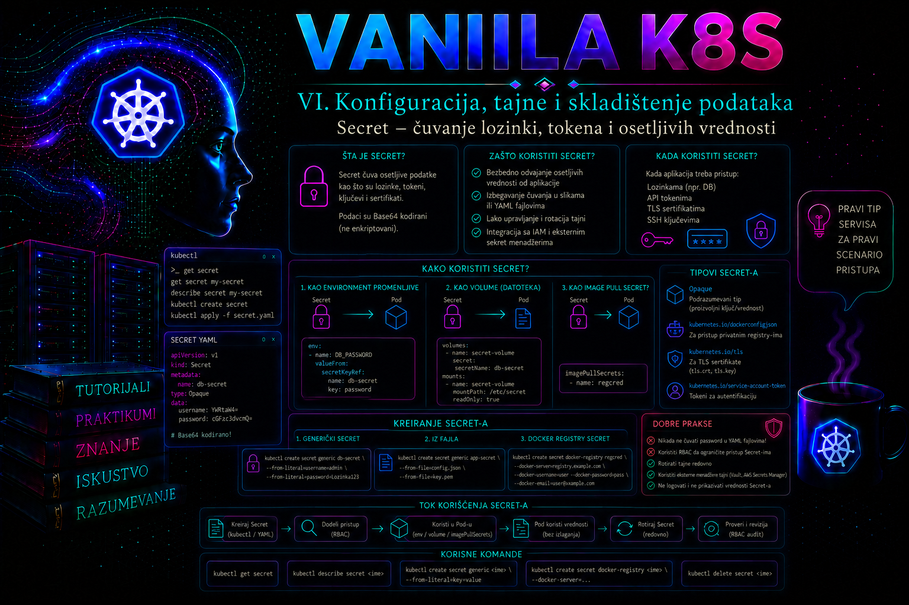

Vanilla Kubernetes

Kubernetes aplikacije često zahtevaju podatke koji ne smeju biti ugrađeni u kontejnersku sliku niti zapisani u javno dostupan manifest: lozinke za baze podataka, API tokene, privatne ključeve, TLS sertifikate, pristupne podatke za privatne registre i druge poverljive vrednosti. Kubernetes objekat Secret omogućava da se takvi podaci odvoje od aplikacionog koda i konfiguracije radnog opterećenja, da im se pristupa kroz Kubernetes API i da se kontrola pristupa sprovodi pomoću RBAC pravila.
Secret nije potpuni sistem za upravljanje životnim ciklusom poslovnih tajni. On ne generiše lozinke, ne određuje automatski rok važenja, ne garantuje rotaciju, ne sprečava aplikaciju da pročita vrednost koja joj je prosleđena i ne zamenjuje namenski eksterni vault. Njegova svrha je da Kubernetes radnom opterećenju bezbednije dostavi osetljive podatke nego što bi to bilo moguće njihovim upisivanjem u sliku, Deployment manifest, ConfigMap ili argument komandne linije.
Uloga Secret objekta u Kubernetes arhitekturi
Secret je namespaced Kubernetes API objekat. To znači da pripada jednom namespace-u i da ga pod, Deployment ili drugi namespaced objekat standardno koristi iz istog namespace-a. Kada administrator kreira Secret, API server proverava zahtev, primenjuje autentikaciju, autorizaciju i admission kontrole, a zatim objekat čuva u skladištu stanja klastera. U tipičnom vanilla Kubernetes klasteru to skladište je etcd.
Pod može da koristi Secret na nekoliko načina: kao fajlove u montiranom volumenu, kao promenljive okruženja, kao podatke za autentikaciju prilikom preuzimanja slike ili posredno preko komponente koja komunicira sa Kubernetes API-jem. Izbor načina isporuke utiče na mogućnost rotacije, vidljivost podatka u procesu, način dijagnostike i rizik od slučajnog otkrivanja.
Važno je razlikovati odvajanje podatka od aplikacije od njegove stvarne zaštite. Podaci u polju data standardnog Secret manifesta zapisani su Base64 kodiranjem. Base64 nije šifrovanje: svako ko može da pročita objekat može jednostavno da dekodira njegov sadržaj. Kubernetes bezbednosne smernice zato zahtevaju ograničen RBAC pristup, šifrovanje poverljivih API podataka u etcd-u, zaštitu pristupa API serveru i razmatranje eksternih sistema za posebno osetljive tajne.
Struktura i tipovi Secret objekata
Standardni manifest sadrži apiVersion: v1, kind: Secret, metapodatke, tip objekta i podatke. Za proizvoljne aplikacione vrednosti koristi se tip Opaque. Kubernetes poznaje i specijalizovane tipove za TLS materijal, autentikaciju prema registru kontejnerskih slika, SSH autentikaciju, basic autentikaciju i druge namene. Tip ne garantuje da je sadržaj kriptografski ispravan, ali definiše očekivane ključeve i olakšava pravilno korišćenje objekta.
| Tip | Tipična namena | Važni ključevi |
|---|---|---|
Opaque |
Lozinke, tokeni i aplikacioni ključevi | Proizvoljni ključevi koje očekuje aplikacija |
kubernetes.io/tls |
TLS sertifikat i privatni ključ | tls.crt i tls.key |
kubernetes.io/dockerconfigjson |
Autentikacija prema privatnom registru | .dockerconfigjson |
kubernetes.io/basic-auth |
Korisničko ime i lozinka | username i password |
kubernetes.io/ssh-auth |
SSH privatni ključ | ssh-privatekey |
Polje data zahteva Base64 kodirane vrednosti. Polje stringData prihvata čitljiv tekst koji API server pri upisu pretvara u odgovarajući sadržaj polja data. stringData olakšava ručno kreiranje, ali ne čini manifest bezbednim: ako se manifest sa čitljivom lozinkom sačuva u Git repozitorijumu, istoriji terminala, sistemu za upravljanje tiketima ili CI logu, tajna je kompromitovana pre nego što stigne do klastera.
apiVersion: v1
kind: Secret
metadata:
name: orders-db-credentials
namespace: orders-prod
type: Opaque
stringData:
DB_USERNAME: orders_app
DB_PASSWORD: DEMO_DB_PASSWORD_CHANGE_ME
Kubernetes ograničava veličinu pojedinačnog Secret objekta na 1 MiB. Secret zato nije mesto za velike keystore datoteke, backup arhive, binarne pakete ili skupove dokumenata. Veliki broj čak i manjih tajni može iscrpeti memoriju API servera i kubelet procesa i uvećati etcd; zato se broj objekata po namespace-u po potrebi ograničava pomoću ResourceQuota pravila.
Kreiranje i bezbedan unos vrednosti
Komanda kubectl create secret generic može da kreira Secret iz literala, fajla ili direktorijuma. Za automatizaciju je korisna kombinacija --dry-run=client -o yaml, jer generiše deklarativni manifest koji se može proslediti komandi kubectl apply. Međutim, navođenje lozinke direktno kroz --from-literal može ostaviti vrednost u shell istoriji, listi procesa, audit zapisu terminalske sesije ili CI izlazu.
Bezbedniji operativni obrazac je preuzimanje tajne iz odobrenog sistema za upravljanje tajnama, njeno privremeno smeštanje u fajl sa restriktivnim dozvolama, kreiranje Kubernetes objekta i trenutno uklanjanje lokalnog fajla. Privremeni direktorijum ne treba čuvati u zajedničkom prostoru, a shell tracing kao što je set -x mora biti isključen.
umask 077
mkdir -p /tmp/orders-secret-input
printf '%s' 'DEMO_DB_PASSWORD_CHANGE_ME' > /tmp/orders-secret-input/DB_PASSWORD
kubectl -n orders-prod create secret generic orders-db-credentials \
--from-literal=DB_USERNAME=orders_app \
--from-file=DB_PASSWORD=/tmp/orders-secret-input/DB_PASSWORD \
--dry-run=client -o yaml |
kubectl apply -f -
rm -rf /tmp/orders-secret-input
Čak i kada je izlaz komande usmeren direktno u kubectl apply, administrator mora proveriti da CI/CD alat ne beleži standardni ulaz, generisani YAML ili promenljive koje sadrže tajnu. Fajl se uklanja odmah po upisu; za posebno osetljive vrednosti koristi se memorijski fajl-sistem ili neposredna integracija sa odobrenim trezorom. Brisanje običnog fajla ne garantuje forenzičko uklanjanje sadržaja sa SSD-a, snapshot-a ili backup-a.
Prosleđivanje tajne aplikaciji
Montiranje Secret-a kao volumena obično je bolji izbor kada aplikacija podržava čitanje kredencijala iz fajla. Kubelet priprema sadržaj za pod i izlaže svaki ključ kao fajl. Administrator može da podesi dozvole pomoću defaultMode i da montira volumen kao read-only. Vrednost se tada ne pojavljuje direktno u definiciji procesa niti u izlazu koji prikazuje promenljive okruženja.
volumes:
- name: db-credentials
secret:
secretName: orders-db-credentials
defaultMode: 0400
containers:
- name: orders-api
volumeMounts:
- name: db-credentials
mountPath: /var/run/secrets/orders-db
readOnly: true
Kada se Secret promeni, Kubernetes periodično osvežava sadržaj standardno montiranog Secret volumena. Promena nije trenutna, a aplikacija mora biti sposobna da ponovo učita fajl. Ako je pojedinačni fajl montiran korišćenjem subPath, automatsko osvežavanje tog mount-a se ne primenjuje. Zato je za rotirajuće kredencijale bolje montirati ceo direktorijum i koristiti aplikaciju koja reaguje na promenu fajla ili kontrolisani restart podova.
Promenljive okruženja koriste se kada aplikacija ne podržava fajlove. Vrednost se u proces postavlja prilikom pokretanja kontejnera. Izmena Secret objekta ne menja okruženje već pokrenutog procesa; potreban je novi pod, najčešće kroz kontrolisani rollout Deployment-a.
env:
- name: DB_USERNAME
valueFrom:
secretKeyRef:
name: orders-db-credentials
key: DB_USERNAME
- name: DB_PASSWORD
valueFrom:
secretKeyRef:
name: orders-db-credentials
key: DB_PASSWORD
Korišćenje envFrom uvozi sve ključeve Secret-a kao promenljive okruženja. To je praktično, ali povećava mogućnost da aplikacija dobije vrednosti koje joj nisu potrebne. Eksplicitni secretKeyRef jasnije dokumentuje zavisnosti i bolje podržava princip najmanjih privilegija.
Zaštita podataka u klasteru
Podrazumevano Base64 kodiranje ne štiti podatke u etcd-u. Administrator klastera treba da konfiguriše Kubernetes API encryption at rest za resurse secrets, koristeći odgovarajućeg pružaoca šifrovanja i pravilno zaštićen ključ. U zavisnosti od bezbednosnih zahteva, ključ može biti lokalno definisan u encryption konfiguraciji ili vezan za eksterni KMS. Kopija konfiguracije i materijal potreban za dešifrovanje moraju biti zaštićeni i uključeni u plan oporavka.
Dodavanje encryption konfiguracije ne šifruje automatski već postojeće objekte. Nakon aktiviranja konfiguracije na svim API serverima, postojeće tajne treba ponovo upisati kroz API da bi bile sačuvane novim mehanizmom. Pre promene mora postojati proverena etcd rezervna kopija i dokumentovan rollback. Gubitak jedinog aktivnog ključa može učiniti poverljive podatke trajno nečitljivim.
Šifrovanje u etcd-u ne štiti podatak nakon što ga API server dešifruje i dostavi ovlašćenom korisniku ili podu. Kompromitovan pod, privilegovani kontejner, administrator sa preširokim RBAC pravima ili napadač koji može da kreira pod u ciljnom namespace-u možda će moći da pristupi tajnama. Zbog toga zaštita mora obuhvatiti RBAC, Pod Security kontrole, izolaciju čvorova, audit, zaštitu backup-a, ograničavanje exec pristupa i kontrolu administrativnih naloga.
U konfiguraciji EncryptionConfiguration redosled pružalaca je operativno značajan: prvi odgovarajući provider koristi se za novi upis, dok se naredni koriste za čitanje starijih zapisa. Provider identity znači čuvanje bez šifrovanja i, ako je prvi, poništava cilj zaštite. Lokalni aescbc ili secretbox štite sadržaj u etcd-u, ali ključ ostaje na control-plane hostu; KMS v2 koristi spoljašnji KMS dodatak i envelope encryption, pa razdvaja podatke od ključa za šifrovanje. KMS v2 je stabilan od Kubernetes 1.29, dok je KMS v1 zastareo od 1.28 i u novim projektima ga ne treba uvoditi. Podršku konkretnog KMS dodatka, dostupnost, latenciju, autentikaciju i postupak rotacije administrator proverava u dokumentaciji dobavljača.
Promena konfiguracije na HA control plane-u izvodi se kontrolisano i dosledno na svim API serverima. Pre masovnog ponovnog upisa proveravaju se snapshot, čitljivost reprezentativnih objekata i health KMS servisa. Migracija postojećih objekata može se izvršiti pažljivim ponovnim upisom kroz API ili podržanim mehanizmom Storage Version Migration; direktna izmena zapisa u etcd-u nije podržan postupak. Kao dokaz proverava se prefiks sirovog etcd zapisa, na primer k8s:enc:kms:v2:, ali samo iz strogo kontrolisanog control-plane okruženja — komanda koja čita etcd može otkriti osetljiv sadržaj i nije rutinska aplikaciona provera.
Sledeći skraćeni primer prikazuje strukturu KMS v2 konfiguracije, a ne univerzalno spreman produkcioni fajl. Endpoint mora odgovarati lokalnom UNIX socket-u KMS plugina na svakom API serveru; identitet plugina, timeout, HA raspored i zaštita pristupa zavise od implementacije. identity je poslednji samo radi čitanja ranije nešifrovanih zapisa. Promena zahteva control-plane privilegije, provereni snapshot i održavanje svih API servera prema proceduri konkretnog klastera.
apiVersion: apiserver.config.k8s.io/v1
kind: EncryptionConfiguration
resources:
- resources:
- secrets
providers:
- kms:
apiVersion: v2
name: enterprise-kms
endpoint: unix:///var/run/kmsplugin/socket.sock
timeout: 3s
- identity: {}Integracija sa spoljnim trezorima
Spoljni trezor uvodi centralno izdavanje, rotaciju, opoziv, audit i često kratkotrajne dinamičke kredencijale. Integracija ipak nije jedna tehnologija već arhitektonska odluka. U modelu sinhronizacije operator čita vrednost iz trezora i kreira standardni Kubernetes Secret. Time se zadržava kompatibilnost sa secretKeyRef, envFrom i postojećim kontrolerima, ali kopija tajne postoji u Kubernetes API-ju i etcd-u. U modelu direktne projekcije CSI driver i provider pribavljaju vrednost pri mount-u i izlažu je podu kao fajl, bez obaveznog kreiranja Kubernetes Secret objekta. Time se smanjuje broj trajnih kopija, ali nastaju zavisnosti od CSI drivera, provider plugina, identiteta workload-a, mrežne dostupnosti trezora i njegove politike dostupnosti.
| Model | Prednost | Ograničenje i operativna posledica |
|---|---|---|
| Native Secret | Najšira Kubernetes kompatibilnost i jednostavan mount | Vrednost postoji u API-ju i etcd-u; životni ciklus i rotaciju organizuje tim |
| Operator koji sinhronizuje Secret | Trezor je izvor istine, a aplikacija koristi standardni Secret | Kopija ostaje u etcd-u; treba pratiti kašnjenje, greške usklađivanja i brisanje |
| Secrets Store CSI Driver | Direktan file mount; nije obavezna kopija u Kubernetes Secret-u | Ne daje vrednost direktno kao environment varijablu; aplikacija mora ponovo učitati fajl, a dostupnost zavisi od drivera i providera |
| Sidecar ili aplikacioni SDK | Može koristiti kratkotrajne dinamičke kredencijale i naprednu obnovu | Veća složenost aplikacije, autentikacije, mreže i incident response-a |
Secrets Store CSI Driver je CNCF SIG projekat, ali konkretni provider za izabrani trezor ima sopstvenu podršku, verzije i način instalacije. Opciona automatska rotacija periodično osvežava mount i, ako je uključena sinhronizacija, povezani Kubernetes Secret; ne restartuje pod niti primorava aplikaciju da ponovo učita sadržaj. Sinhronizovani Secret nastaje tek kada postoji pod koji montira odgovarajući SecretProviderClass, a može biti uklonjen kada nestanu svi potrošači. Zbog tih semantika ne treba ga tretirati kao nezavisni trajni objekat. Pre produkcije testiraju se prekid veze sa trezorom, istek workload identiteta, nedostupan provider, dozvoljeno kašnjenje rotacije, ponašanje već pokrenutih podova i oporavak bez štampanja vrednosti.
Generički Pod obrazac ispod prikazuje mesto integracije. provider i sadržaj parameters nisu prenosivi između trezora; popunjavaju se isključivo prema zvaničnoj dokumentaciji instaliranog providera. Autentikaciju treba vezati za namenski workload identitet, a ne za statički administratorski token smešten u drugi Secret.
apiVersion: secrets-store.csi.x-k8s.io/v1
kind: SecretProviderClass
metadata:
name: orders-vault
namespace: orders-prod
spec:
provider: PROVIDER_NAME
parameters:
# Provider-specifična, zvanično dokumentovana konfiguracija.
objects: PROVIDER_SPECIFIC_OBJECTS
---
apiVersion: v1
kind: Pod
metadata:
name: orders-vault-consumer
namespace: orders-prod
spec:
serviceAccountName: orders-api
containers:
- name: app
image: APPLICATION_IMAGE_PINNED_BY_DIGEST
volumeMounts:
- name: external-secrets
mountPath: /var/run/secrets-store
readOnly: true
volumes:
- name: external-secrets
csi:
driver: secrets-store.csi.k8s.io
readOnly: true
volumeAttributes:
secretProviderClass: orders-vaultRBAC, identiteti i granice ovlašćenja
Pravo get nad Secret objektom praktično omogućava čitanje njegove vrednosti. Pravo list može izložiti sve Secret objekte u namespace-u. Pravo kreiranja podova takođe je bezbednosno značajno: korisnik koji može da kreira proizvoljan pod možda može da montira Secret koji koristi drugi workload u istom namespace-u, čak i ako nema direktno API pravo get.
Administratori zato ne treba da dodeljuju široke ugrađene uloge bez analize efektivnih ovlašćenja. Aplikacioni ServiceAccount obično ne mora da čita Secret preko API-ja ako kubelet montira tačno određeni Secret deklarisan u pod specifikaciji. Čoveku koji samo obavlja rollout aplikacije možda su potrebna prava nad Deployment objektima, ali ne i pravo da prikazuje sadržaj svih tajni.
kubectl auth can-i get secrets -n orders-prod
kubectl auth can-i list secrets -n orders-prod
kubectl auth can-i create pods -n orders-prod
kubectl auth can-i --as=system:serviceaccount:orders-prod:orders-api get secrets -n orders-prodZa novije Kubernetes implementacije kratkotrajni projektovani ServiceAccount tokeni imaju prednost nad ručno kreiranim dugotrajnim tokenima sačuvanim u Secret objektima. Token treba da ima ograničen audience i rok važenja kada komponenta koja ga koristi podržava takav model.
Rotacija, nepromenljivost i životni ciklus
Rotacija nije samo izmena vrednosti u Kubernetes objektu. Administrator mora da uskladi promenu na izvornom sistemu, u Kubernetes Secret-u i u aplikaciji koja vrednost koristi. Bez koordinacije može nastati period u kome aplikacija koristi staru lozinku, dok je baza već prihvatila samo novu.
Najbezbedniji model, kada ga zavisni sistem podržava, jeste preklapajuća rotacija: kreira se novi kredencijal, aplikacija se prebacuje na njega, proverava se funkcionalnost, a stari kredencijal se ukida tek nakon potvrde. Kada je dostupan samo jedan aktivni kredencijal, promena zahteva precizan maintenance plan, proveru rollback mogućnosti i jasno definisan dozvoljeni prekid.
Secret može biti označen poljem immutable: true. Nepromenljiv objekat sprečava slučajnu izmenu njegovih podataka i može smanjiti opterećenje kubelet procesa u klasterima sa velikim brojem mount-ova. Njegovi podaci se kasnije ne mogu izmeniti; potrebno je kreirati novi Secret pod drugim imenom i ažurirati workload ili obrisati i ponovo kreirati objekat, što je rizičnije. Nepromenljivost zato ima smisla za verzionisane tajne i sertifikate koji se distribuiraju kao novi objekti, ali ne i za vrednosti koje operativni proces redovno menja pod istim imenom.
Najčešće greške i dijagnostika
- Secret je sačuvan u Git repozitorijumu. Base64 sadržaj nije zaštita. Potrebno je odmah ukloniti podatak iz aktivne grane i istorije, opozvati kompromitovani kredencijal, generisati novi i proveriti pristupne logove.
- Pogrešan namespace. Pod ne može standardno da referencira Secret iz drugog namespace-a. Događaji poda obično prikazuju poruku da Secret nije pronađen.
- Pogrešan naziv ključa. Objekat postoji, ali
secretKeyRefili stavka volumena traži nepostojeći ključ. Pod ostaje u stanjuCreateContainerConfigError. - Očekivanje trenutne rotacije promenljive okruženja. Postojeći proces zadržava staru vrednost. Potreban je rollout novih podova.
- Izlaganje kroz troubleshooting. Komande kao što su
env,printenv,cat, shell tracing i detaljan CI debug mogu prikazati tajnu u terminalu ili logu. - Preširoka prava. Korisnik ili ServiceAccount može da čita sve tajne ili da kreira podove koji ih montiraju. Potrebna je analiza efektivnih RBAC prava, a ne samo naziva dodeljene uloge.
- Neusklađena rotacija. Kubernetes Secret je promenjen pre baze podataka ili eksternog servisa, pa nova instanca aplikacije više ne može da se autentifikuje.
Osnovna dijagnostika počinje proverom postojanja i metapodataka objekta bez prikazivanja sadržaja, zatim pregledom pod događaja, Deployment statusa, logova aplikacije i efektivnih RBAC prava. Komanda kubectl describe secret prikazuje tip, ključeve i približnu veličinu vrednosti, ali standardno ne prikazuje sam sadržaj.
kubectl -n orders-prod get secret orders-db-credentials
kubectl -n orders-prod describe secret orders-db-credentials
kubectl -n orders-prod get pods
kubectl -n orders-prod describe pod POD_NAME
kubectl -n orders-prod logs POD_NAME -c orders-api --tail=100Dijagnostika se vodi od najmanje invazivne provere ka sadržajno osetljivijoj. Najpre se utvrđuju simptom, pogođeni namespace i workload, vreme poslednje promene i stanje rollout-a; zatim se proveravaju metapodaci Secret-a, reference u Pod specifikaciji, događaji kubelet-a i aplikacioni logovi. Tek kada hipoteza to zahteva, ovlašćeni operator u kontrolisanom okruženju potvrđuje sadržaj ili kriptografski otisak pojedinačne vrednosti. Otisak tajne nije bezuslovno bezbedan: za kratke ili predvidljive lozinke može omogućiti offline pogađanje, pa se ne sme slati u tiket ili zajednički log.
Ako je tajna pronađena u Git istoriji, CI logu ili terminalskom snimku, neposredni uzrok je curenje kopije, dok osnovni uzrok može biti nebezbedan proces isporuke ili nedostatak kontrole repozitorijuma. Privremena mera je ograničavanje pristupa izvoru curenja; trajna korekcija zahteva opoziv i zamenu kredencijala, pregled audit i pristupnih logova, uklanjanje iz istorije uz koordinaciju sa vlasnicima svih klonova i uvođenje preventivnog skeniranja. Samo brisanje reda iz poslednjeg commit-a nije recovery.
Integrisani praktikum: bezbedna isporuka i rotacija pristupnih podataka
Poslovni i tehnički kontekst. Tim za elektronsku prodaju uvodi servis orders-api u produkcioni namespace orders-prod. Aplikaciji su potrebni korisničko ime i lozinka za bazu podataka. Vrednosti ne smeju biti zapisane u Deployment manifestu niti prikazane u izlazu validacionih komandi. Aplikacioni tim zahteva da korisničko ime bude prosleđeno kao promenljiva okruženja, dok lozinka mora biti montirana kao fajl sa read-only pristupom.
Cilj. Kreirati Secret, implementirati workload koji ga koristi, potvrditi da vrednosti nisu izložene u manifestu Deployment-a, izvesti kontrolisanu rotaciju lozinke i dokazati da nova instanca koristi ažurirani Secret.
Referentno okruženje. Vanilla Kubernetes klaster sa funkcionalnim DNS-om i mrežnim dodatkom, kubectl klijent usklađen sa podržanom verzijom API servera i registry pristupom za sliku busybox:1.36. Koriste se namespace orders-prod, ServiceAccount orders-api, Secret orders-db-credentials, Deployment orders-api i Service orders-api.
Preduslovi i prava. Operator mora imati prava za kreiranje namespace-a ako on ne postoji, kao i prava get, create, patch i update nad Secret i Deployment objektima u ciljnom namespace-u. Za pregled rada potrebna su prava nad podovima, događajima i logovima. Direktno čitanje Secret sadržaja nije potrebno za svakodnevnu validaciju.
-
Provera konteksta i efektivnih ovlašćenja.
Pogrešan kubectl kontekst može poslati poverljive podatke u drugi klaster. Pre promene prikazuju se trenutni kontekst, identitet klastera i potrebna prava.
Validacija: Kontekst mora odgovarati odobrenom produkcionom klasteru. Za operacije koje će biti izvršene očekuje se odgovorkubectl config current-context kubectl cluster-info kubectl auth can-i create namespaces kubectl auth can-i create secrets -n orders-prod kubectl auth can-i update secrets -n orders-prod kubectl auth can-i create deployments.apps -n orders-prod kubectl auth can-i get pods/log -n orders-prodyes. Odgovornonije razlog za traženje cluster-admin naloga, već za zahtev za minimalnim potrebnim pravima. -
Kreiranje namespace-a i ServiceAccount objekta.
Namespace predstavlja administrativnu i RBAC granicu, dok namenski ServiceAccount odvaja identitet aplikacije od podrazumevanog naloga.
Validacija: ServiceAccount mora postojati, a automatsko montiranje API tokena mora biti isključeno jer demonstracionoj aplikaciji Kubernetes API nije potreban.kubectl create namespace orders-prod --dry-run=client -o yaml | kubectl apply -f - cat > /tmp/orders-serviceaccount.yaml <<'EOF' apiVersion: v1 kind: ServiceAccount metadata: name: orders-api namespace: orders-prod automountServiceAccountToken: false EOF kubectl apply -f /tmp/orders-serviceaccount.yaml rm -f /tmp/orders-serviceaccount.yaml
Očekivani izlaz jekubectl -n orders-prod get serviceaccount orders-api \ -o jsonpath='{.metadata.name}{" automount="}{.automountServiceAccountToken}{"\n"}'orders-api automount=false. -
Početna provera postojećeg stanja.
Pre kreiranja proverava se da li objekat sa istim imenom već postoji. Postojeći Secret ne sme biti prepisan bez identifikovanja vlasnika, potrošača i važeće procedure promene.
Validacija: U novom okruženju očekuje sekubectl -n orders-prod get secret orders-db-credentials kubectl -n orders-prod get deployment orders-api kubectl -n orders-prod get service orders-apiNotFound. Ako objekti postoje, operator prekida postupak, izvozi samo njihove metapodatke i proverava change zapis pre bilo kakve izmene. -
Bezbedno kreiranje Secret objekta.
Lozinka se privremeno zapisuje u direktorijum dostupan samo trenutnom korisniku. U realnom okruženju vrednost bi bila preuzeta iz odobrenog enterprise vault sistema, a ne ručno osmišljena.
Validacija: Sadržaj se ne prikazuje. Proveravaju se tip, postojanje očekivanih ključeva i veličina podataka.umask 077 mkdir -p /tmp/orders-secret-input printf '%s' 'DEMO_DB_PASSWORD_V1_CHANGE_ME' \ > /tmp/orders-secret-input/DB_PASSWORD kubectl -n orders-prod create secret generic orders-db-credentials \ --type=Opaque \ --from-literal=DB_USERNAME=orders_app \ --from-file=DB_PASSWORD=/tmp/orders-secret-input/DB_PASSWORD \ --dry-run=client -o yaml | kubectl apply -f - rm -rf /tmp/orders-secret-input
Očekuje se tipkubectl -n orders-prod get secret orders-db-credentials \ -o jsonpath='{.type}{"\n"}' kubectl -n orders-prod describe secret orders-db-credentialsOpaquei ključeviDB_USERNAMEiDB_PASSWORDsa nenultom veličinom. -
Implementacija Deployment-a i internog Service-a.
Demonstracioni kontejner ne prikazuje vrednost tajne. Pri pokretanju proverava da korisničko ime i fajl sa lozinkom postoje, upisuje samo status u HTML dokument i pokreće jednostavan HTTP servis. Readiness proba potvrđuje da je fajl dostupan i neprazan.
Validacija: Deployment mora dostići dva dostupna pod-a. U slučaju neuspeha ne prikazuje se tajna, već se proveravaju događaji i logovi.cat > /tmp/orders-api.yaml <<'EOF' apiVersion: apps/v1 kind: Deployment metadata: name: orders-api namespace: orders-prod spec: replicas: 2 selector: matchLabels: app: orders-api template: metadata: labels: app: orders-api spec: serviceAccountName: orders-api automountServiceAccountToken: false containers: - name: orders-api image: busybox:1.36 command: - /bin/sh - -ec - | test -n "${DB_USERNAME}" test -s /var/run/secrets/orders-db/DB_PASSWORD mkdir -p /www printf '%s\n' 'orders-api: secret configuration loaded' > /www/index.html exec httpd -f -p 8080 -h /www env: - name: DB_USERNAME valueFrom: secretKeyRef: name: orders-db-credentials key: DB_USERNAME ports: - name: http containerPort: 8080 readinessProbe: exec: command: - /bin/sh - -ec - test -s /var/run/secrets/orders-db/DB_PASSWORD initialDelaySeconds: 2 periodSeconds: 5 livenessProbe: tcpSocket: port: http initialDelaySeconds: 5 periodSeconds: 10 volumeMounts: - name: db-credentials mountPath: /var/run/secrets/orders-db readOnly: true resources: requests: cpu: 10m memory: 16Mi limits: cpu: 100m memory: 64Mi volumes: - name: db-credentials secret: secretName: orders-db-credentials defaultMode: 0400 --- apiVersion: v1 kind: Service metadata: name: orders-api namespace: orders-prod spec: selector: app: orders-api ports: - name: http port: 80 targetPort: http EOF kubectl apply -f /tmp/orders-api.yaml rm -f /tmp/orders-api.yaml
Uspeh je stanjekubectl -n orders-prod rollout status deployment/orders-api --timeout=120s kubectl -n orders-prod get deployment orders-api kubectl -n orders-prod get pods -l app=orders-api -o wide2/2spremnih replika i završen rollout. -
Provera načina isporuke bez otkrivanja vrednosti.
Potvrđuje se da je korisničko ime povezano kroz
secretKeyRef, da je volumen read-only i da Deployment manifest ne sadrži čitljivu lozinku.
Očekivani rezultat: Prva komanda vraćakubectl -n orders-prod get deployment orders-api \ -o jsonpath='{.spec.template.spec.containers[0].env[0].valueFrom.secretKeyRef.name}{"\n"}' kubectl -n orders-prod get deployment orders-api \ -o jsonpath='{.spec.template.spec.containers[0].volumeMounts[0].readOnly}{"\n"}' kubectl -n orders-prod get deployment orders-api -o yaml | grep -F 'DEMO_DB_PASSWORD' && echo 'NEUSPEH: vrednost je izložena' || echo 'USPEH: vrednost nije u Deployment manifestu'orders-db-credentials, drugatrue, a završna provera potvrđuje da lozinka nije zapisana u Deployment objektu. -
Funkcionalna provera servisa.
Privremeni dijagnostički pod pristupa servisu iz istog namespace-a. Odgovor potvrđuje da je aplikacija pokrenuta tek nakon uspešne provere Secret-a.
Validacija: Očekivani odgovor jekubectl -n orders-prod run secret-check \ --image=busybox:1.36 \ --restart=Never \ --rm -i \ --wget-output-document=- \ --timeout=5 \ http://orders-apiorders-api: secret configuration loaded. DNS greška ukazuje na problem sa Service ili klasterskim DNS-om; timeout ukazuje na endpoint, mrežni ili readiness problem; odbijena veza ukazuje da kontejner ne sluša na očekivanom portu. -
Negativni test sa nepostojećim ključem.
Test se izvodi na odvojenom podu kako se produkcioni Deployment ne bi menjao. Pod namerno zahteva ključ koji ne postoji.
Očekivani rezultat: Pod se ne pokreće, a događaji ukazuju da ključcat > /tmp/orders-negative-test.yaml <<'EOF' apiVersion: v1 kind: Pod metadata: name: orders-secret-negative-test namespace: orders-prod spec: restartPolicy: Never containers: - name: test image: busybox:1.36 command: ["/bin/sh", "-c", "sleep 300"] env: - name: INVALID_VALUE valueFrom: secretKeyRef: name: orders-db-credentials key: NON_EXISTENT_KEY EOF kubectl apply -f /tmp/orders-negative-test.yaml sleep 5 kubectl -n orders-prod get pod orders-secret-negative-test kubectl -n orders-prod describe pod orders-secret-negative-testNON_EXISTENT_KEYnije pronađen u Secret-u. To razlikuje grešku reference od greške aplikacione autentikacije.kubectl -n orders-prod delete pod orders-secret-negative-test rm -f /tmp/orders-negative-test.yaml -
Kontrolisana rotacija lozinke.
Pretpostavlja se da je nova vrednost prethodno aktivirana na ciljnoj bazi ili da baza privremeno prihvata oba kredencijala. Bez te potvrde Kubernetes promena bi mogla da prekine rad aplikacije.
Validacija: Proverava se nova verzija resursa i postojanje ključeva, bez dekodiranja sadržaja.umask 077 mkdir -p /tmp/orders-secret-rotation printf '%s' 'DEMO_DB_PASSWORD_V2_CHANGE_ME' \ > /tmp/orders-secret-rotation/DB_PASSWORD kubectl -n orders-prod create secret generic orders-db-credentials \ --type=Opaque \ --from-literal=DB_USERNAME=orders_app \ --from-file=DB_PASSWORD=/tmp/orders-secret-rotation/DB_PASSWORD \ --dry-run=client -o yaml | kubectl apply -f - rm -rf /tmp/orders-secret-rotationkubectl -n orders-prod get secret orders-db-credentials \ -o jsonpath='resourceVersion={.metadata.resourceVersion}{"\n"}' kubectl -n orders-prod describe secret orders-db-credentials -
Restart aplikacije nakon rotacije.
Iako se montirani volumen periodično osvežava, kontrolisani rollout obezbeđuje da sve instance započnu rad sa novim stanjem i predstavlja obavezan postupak kada se tajna koristi kao promenljiva okruženja.
Validacija: Svi prikazani podovi moraju biti novi, spremni i pokrenuti nakon vremena rotacije. Stari podovi ne smeju ostati aktivni nakon završenog rollout-a.kubectl -n orders-prod rollout restart deployment/orders-api kubectl -n orders-prod rollout status deployment/orders-api --timeout=120s kubectl -n orders-prod get pods -l app=orders-api \ -o custom-columns='NAME:.metadata.name,READY:.status.containerStatuses[0].ready,STARTED:.status.startTime' -
Završna funkcionalna provera i pregled logova.
Provera ponavlja pristup servisu i traži greške u logovima bez štampanja okruženja ili sadržaja montiranog fajla.
Lokacija i svrha logova: Aplikacioni stdout i stderr dostupni su kroz kubelet ikubectl -n orders-prod run secret-check-final \ --image=busybox:1.36 \ --restart=Never \ --rm -i \ --wget-output-document=- \ --timeout=5 \ http://orders-api kubectl -n orders-prod logs deployment/orders-api -c orders-api --tail=100 --prefixkubectl logs; na čvoru ih container runtime i kubelet vode u standardnoj strukturi pod logova, najčešće povezanoj sa direktorijumom/var/log/pods. Kubernetes događaji dobijaju se krozkubectl get eventsikubectl describe pod. API audit log, ako je omogućen, nalazi se na lokaciji definisanoj parametrima API servera ili u centralnom log sistemu klastera.
Očekivani rezultat: HTTP test je uspešan, oba pod-a su spremna, nema događajakubectl -n orders-prod get events \ --sort-by=.metadata.creationTimestamp | tail -n 20FailedMount,FailediliBackOffi nema aplikacionih grešaka autentikacije. -
Rollback postupak.
Ako nova lozinka nije prihvaćena, prvo se potvrđuje da je prethodni kredencijal još aktivan u bazi. Stara vrednost se zatim ponovo upisuje u Secret i pokreće novi rollout. Deployment rollback sam po sebi nije dovoljan, jer revizija Deployment-a ne sadrži prethodnu vrednost zasebnog Secret objekta.
Upozorenje: Rollback ne treba izvršiti ako je stari kredencijal opozvan ili kompromitovan. U tom slučaju eskalira se vlasniku baze i bezbednosnom timu radi izdavanja novog važećeg kredencijala.umask 077 mkdir -p /tmp/orders-secret-rollback printf '%s' 'DEMO_DB_PASSWORD_V1_CHANGE_ME' \ > /tmp/orders-secret-rollback/DB_PASSWORD kubectl -n orders-prod create secret generic orders-db-credentials \ --type=Opaque \ --from-literal=DB_USERNAME=orders_app \ --from-file=DB_PASSWORD=/tmp/orders-secret-rollback/DB_PASSWORD \ --dry-run=client -o yaml | kubectl apply -f - rm -rf /tmp/orders-secret-rollback kubectl -n orders-prod rollout restart deployment/orders-api kubectl -n orders-prod rollout status deployment/orders-api --timeout=120s
Merljivi kriterijumi prihvatanja. Secret postoji samo u namespace-u orders-prod; sadrži dva očekivana ključa; Deployment manifest ne sadrži čitljivu lozinku; dva od dva pod-a su dostupna; Service vraća očekivani status; negativni test proizvodi događaj o nepostojećem ključu; rotacija završava bez nedostupnih replika; svi novi podovi koriste vreme pokretanja nakon rotacije; u događajima i aplikacionim logovima nema grešaka mount-a, konfiguracije ili autentikacije.
Administratorske prakse
- Kontrola RBAC pristupa. Najmanje kvartalno i nakon promene uloga izvršiti
kubectl auth can-iprovere i pregled RoleBinding/ClusterRoleBinding objekata. Reakciju zahtevaju korisnici koji mogu da čitaju sve tajne ili da kreiraju proizvoljne podove bez poslovne potrebe. Prva reakcija je potvrda vlasnika prava i privremeno ograničavanje kompromitujuće veze. Nalaz se dokumentuje u IAM evidenciji i change ili security tiketu. Uspeh je odsustvo neodobrenih prava u ponovljenoj proveri. - Praćenje neuspelih mount-ova i pokretanja. Nakon svakog rollout-a i kontinuirano kroz monitoring pratiti događaje
FailedMount,CreateContainerConfigErrori rast restart broja. Prva reakcija je provera naziva Secret-a, ključa, namespace-a i ServiceAccount-a. Dokumentuju se vreme, pogođeni workload, uzrok i korektivna promena. Uspeh je stabilan broj spremnih replika bez novih događaja u definisanom periodu posmatranja. - Rotacija i rok važenja. Za svaku tajnu voditi vlasnika, izvor, datum izdavanja, maksimalni rok važenja, potrošače i proceduru opoziva. Provera se obavlja najmanje mesečno ili automatskim upitom prema vault/CMDB sistemu. Reakciju zahteva tajna kojoj rok ističe pre sledećeg planiranog prozora promene. Uspeh se meri procentom rotacija izvršenih pre isteka i bez incidenta.
- Audit pristupa. API audit politika treba da beleži ko je pristupao Secret resursima, ali ne treba nekontrolisano da beleži kompletna tela zahteva i odgovora sa poverljivim sadržajem. Bezbednosni tim periodično traži neuobičajene
get,listiwatchoperacije. Prva reakcija na anomaliju je očuvanje logova, identifikovanje identiteta i opoziv sumnjivih kredencijala. Uspeh je mogućnost povezivanja svake administrativne operacije sa odobrenom promenom. - Šifrovanje u mirovanju. Nakon izgradnje klastera, promene API server konfiguracije i rotacije KMS ključa proverava se aktivna encryption konfiguracija i mogućnost čitanja postojećih objekata. Odstupanje je nov Secret koji je u etcd-u prepoznatljiv kao čitljiv JSON/Base64 zapis bez odgovarajućeg encryption prefiksa. Prva reakcija je zaustavljanje masovne migracije, provera konfiguracije svih API servera i vraćanje na proverenu konfiguraciju.
- Backup i oporavak. Čuva se konzistentan etcd snapshot zajedno sa bezbedno odvojenom encryption konfiguracijom i ključevima potrebnim za dešifrovanje. Backup se radi prema RPO zahtevu, često najmanje jednom dnevno i pre rizičnih kontrol-plane promena. Čuva se šifrovano, van klastera i sa ograničenim pristupom. Integritet se proverava alatima za proveru snapshot-a, a probni restore se periodično izvodi u izolovanom klasteru. Backup je upotrebljiv tek kada obnovljeni API server može da pročita testni Secret, pokrene referentni workload i kada su rezultati restore testa dokumentovani.
Završna kontrolna tačka
- Potvrđen je tačan kubectl kontekst i identitet ciljnog klastera.
- Secret se nalazi u istom namespace-u kao workload koji ga koristi.
kubectl describe secretprikazuje očekivani tip, ključeve i nenulte veličine bez otkrivanja vrednosti.- Deployment koristi eksplicitni
secretKeyRefili read-only Secret volumen. - Manifesti, Git istorija, CI logovi i tiket ne sadrže čitljivu niti Base64 kodiranu produkcionu tajnu.
- Efektivna RBAC prava za
get,list,watchnad tajnama icreate podsodobrena su samo opravdanim identitetima. - Svi podovi su spremni, bez događaja
FailedMountiCreateContainerConfigError. - Funkcionalni test potvrđuje rad aplikacije bez štampanja tajne.
- Za rotaciju postoje vlasnik, redosled promene, rollback uslov i kriterijumi prihvatanja.
- Encryption at rest i zaštita etcd backup-a provereni su prema bezbednosnoj politici klastera.
- Audit i aplikacioni logovi ne beleže telo Secret objekta, promenljive okruženja ili sadržaj poverljivog fajla.
- Probni restore potvrđuje da su etcd snapshot i ključevi za dešifrovanje zajedno upotrebljivi.
Zaključak
Administrator nakon ove lekcije treba da razume da Kubernetes Secret predstavlja kontrolisani mehanizam isporuke osetljivih podataka, ali ne i samostalno kompletno bezbednosno rešenje. Base64 kodiranje ne štiti sadržaj, namespace nije apsolutna bezbednosna granica, a pravo kreiranja podova može biti gotovo jednako značajno kao direktno pravo čitanja tajni.
U praktičnom radu administrator treba da ume da kreira Secret bez nepotrebnog izlaganja vrednosti, da izabere između volumena i promenljivih okruženja, da ograniči prava pristupa, sprovede rotaciju i restart zavisnih podova, proveri događaje i logove i razlikuje nepostojeći objekat, nepostojeći ključ, grešku mount-a i neuspešnu autentikaciju aplikacije. Promene moraju imati proverljiv redosled, uslov za rollback i merljive kriterijume prihvatanja.
Granica administratorske odgovornosti obuhvata bezbednu Kubernetes konfiguraciju, zaštitu etcd-a, kontrolu ovlašćenja, audit i dokumentovanje životnog ciklusa. Generisanje poslovnih kredencijala, odobravanje pristupa bazi, procena kompromitacije i opoziv tajni često zahtevaju saradnju sa vlasnikom aplikacije, DBA, IAM i bezbednosnim timom. Neuobičajen pristup, gubitak encryption ključa, kompromitovan ServiceAccount, tajna pronađena u repozitorijumu ili neuspešna rotacija koja zahteva ponovno aktiviranje opozvanog kredencijala predstavljaju razlog za neposrednu eskalaciju, a ne za improvizovanu lokalnu izmenu.